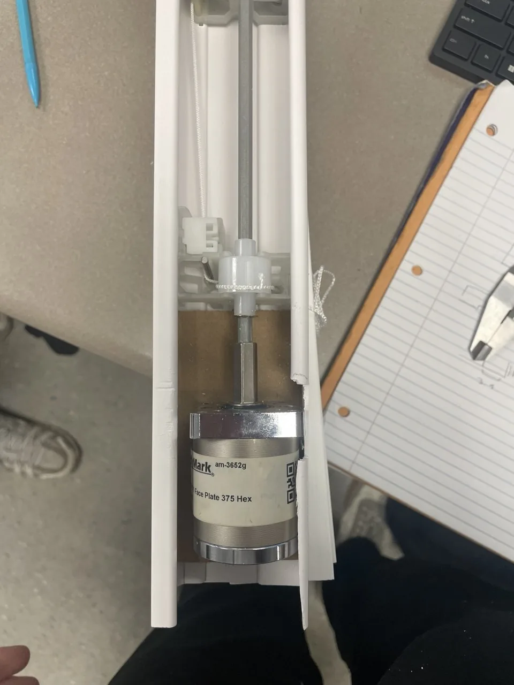
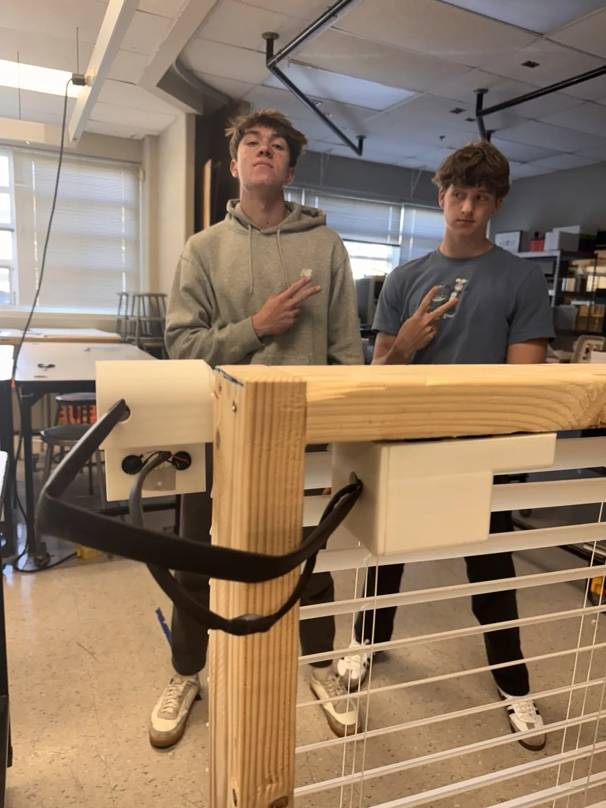
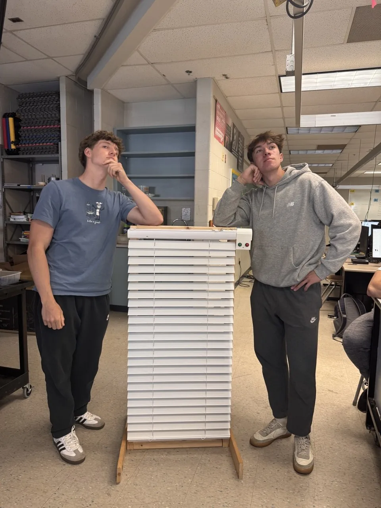

Senior year
2024–25
A window blind that opens itself in the morning
Press the green button before bed. Eight hours later a motor tilts the slats open and daylight wakes you up.
- A 12 V planetary gearmotor sits in the end of the head rail and turns the tilt mechanism directly. It replaces the wand.
- An Arduino Uno with an Adafruit Motor Shield runs the timer and drives the motor.
- Two buttons and one LED. The LED confirms the timer has started.
- The printed motor tray slides into the head rail, so only the button box shows beside the slats.
- The Arduino and battery sit in a second printed box, under the top of the window frame behind the blind.
Taken apartDrawn from photos of the prototype. Drag to turn.
Parts
- 1Head rail and slatsThe stock blind. The tilt rod runs inside the rail.
- 2Hex shaftCouples the motor straight to the tilt mechanism.
- 3Gearmotor12 V, planetary gearbox, encoder. It lies in the tray.
- 4Motor housing3D printed. The tray slides into the end of the rail. The button box stays outside, beside the slats.
- 5Buttons and LEDGreen starts the timer. The LED shows it is running.
- 6Arduino Uno and Motor ShieldThe shield plugs into the top of the Uno.
- 712 V battery packPlugs into the motor shield.
- 8Electronics enclosure3D printed. Fixed under the top of the window frame, behind the blind. A sheathed cable runs to the button box.
- 9Window frameDrawn as a deep frame. The prototype itself was built on a wooden test stand.



